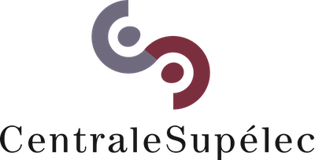
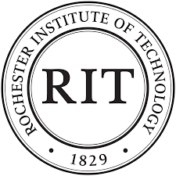
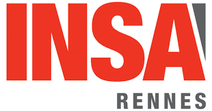

Fort d'une expérience de développement de modèles numériques enrichie par une formation en data-science et aguerri au développement de produit industriel, je poursuis avec enthousiasme ma carrière dans la data science.
Programmation: python, flask, Django, MySQL, shell, [moins récemment: C/C++, Fortran, Halcon]
Librairies: Sklearn, Keras, TensorFlow, Pandas, Numpy, Imblearn, XGBOOST, LightGBM, SHAP, LIME, nltk, gensim, openCV
Librairies de visualisation: Matplotlib, streamlit, plotly, seaborn
Environnement cloud: AWS/EMR, Azure/Databricks, pyspark
Versionning : Git/Github
IDE : Jupyter Lab/Notebook, Vim
Organisé : Définition de roadmap, définition des taches, rétroplanning
Autonome : Anticipation des points critiques, Auto-formation
Efficace : Atteindre rapidement le MVP (Minimum Viable Product). Proposer des solutions alternatives pragmatiques en cas de risque critique.
Consciencieux : Amélioration continue, listing des points durs et amélioration des pratiques
Esprit d'équipe : Fédérer les coéquipiers autour d'un objectif commun. Challenger et Epauler.
Esprit de synthèse.
Anglais : courant (C1)
Français : langue maternelle
Comprendre et traduire des besoins clients.
Collecter, analyser, explorer et traiter des données.
Identifier des solutions d'IA répondant aux problématiques clients.
Réaliser des POC en Machine Learning.
Déployer des modèles dans le cloud ou en Edge.
Présenter les résultats à des publics variés (réunion, workshop, conférence)
Développement Application bancaire d'aide à l'octroi de prêt.
Classification de produits (données texte et image).
Segmentation de clients d'un site de e-commerce.
Prédiction des consommations énergétiques de bâtiments.
Etude de faisabilité, analyse statistique pour application de santé et pour projet d'expansion à l'internationnal.
Gestionnaire d'entreprise: Communiquer et comprendre les besoins des clients et équipes, Structurer système Qualité/Coût/Délais, processus SAV, maintenance. Analyser les données, prendre des décisions, assurer le suivi.
Définir des solutions techniques en robotique & Computer vision. Piloter le développement de POC par méthode cycle en V et Scrum. Comprendre besoins client. Piloter industrialisation de production capteurs de vision. Organiser et Gérer le déploiement du système de vision à l'international.
Gestion de projets de recherche Européen H2020. Gestion dossier CIR.
Modélisation par Eléments-Finis. Computer vision.
Modélisation numérique. Développement de modèles, d'algorithmes. Optimisation hyper paramètres. Analyse de données. Simulation numérique. Calculs parallèles et distribués.
Critique scientifique pour Journal of Physics and Chemistry of Solids.
Publications et Présentation des travaux en conférences internationales.
2023 – Data Scientist (niveau Master)  / 2008 – Doctorat - Modélisation numérique, CEA-Léti / 2005 – Ingénieur Nano-matériaux  RIT(USA), INSA-Rennes 